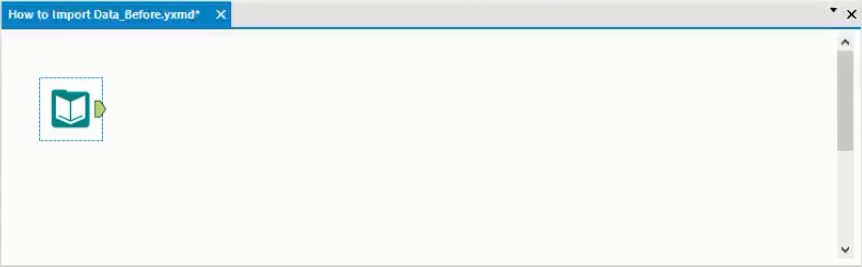
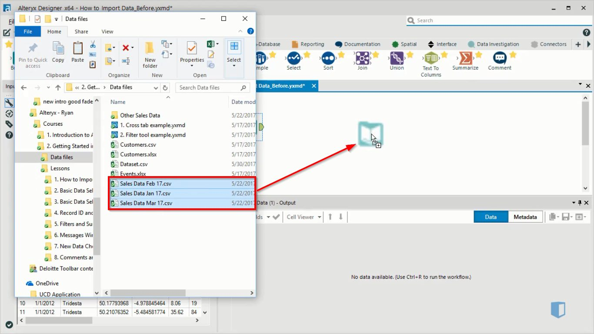
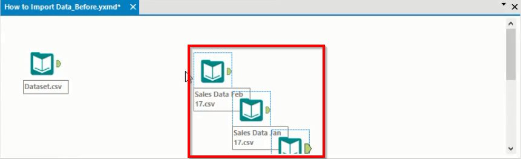
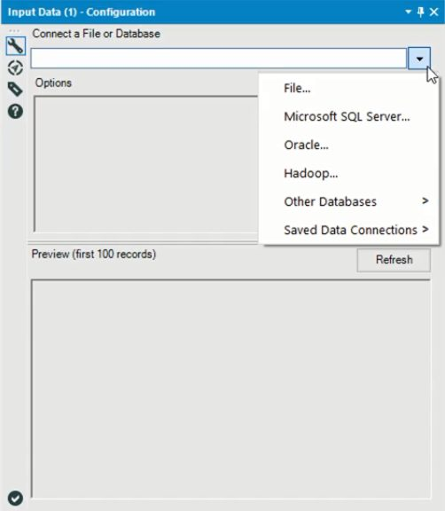
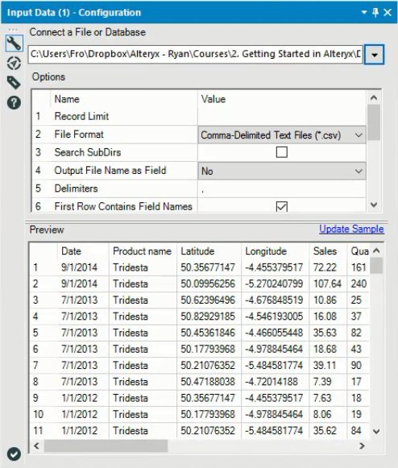
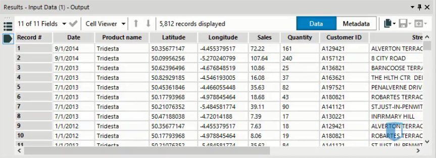
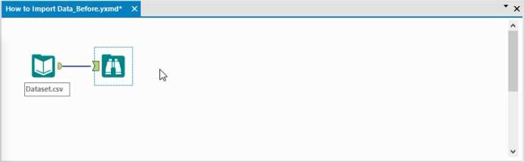

A lot of your work with Alteryx will involve using and manipulating a wide variety of data sources. One of the strengths of Alteryx is that you can import data from many different sources into it, from databases to Excel files and many more.
However, if you’re new to Alteryx, you might be slightly overwhelmed by all this, and wonder how difficult it must be to know how to import all these different data sources. In fact, the process for importing data to Alteryx is pretty similar regardless of what the data source is, as we’ll demonstrate in this post.
Importing data
Importing data is generally the first thing you will do when you start a new Alteryx workflow. You can import data by adding an Input Data icon to the canvas. This is found on the In/Out tab of the tools palette. Below we see a canvas where we have added this tool.

Importing multiple files
Although we won’t demonstrate it in detail, there is a handy little shortcut available when you want to import multiple files at once into Alteryx. We can simply select the files in the computer’s File Explorer window, and then drag them onto a blank part of the canvas.

This will create a separate input data tool for each of the files we dragged in, as seen in the canvas below.

Configuration window
Let’s return to our example of connecting a single file. When we add the input data tool to the canvas, the configuration window will be available, and it will look something like the image below.

There are three main areas to this window. At the top is the option to connect our data to this Input Data tool. Below are the options and preview windows, which will be filled when we select a file.
As we can see from the menu. Alteryx lets us connect to files or databases. The connection process varies slightly according to the file type, but the difference is not particularly large. An example of a simple connection would be a csv file. To connect to one of these, we only need to select File from the menu, and navigate to the correct file.
After we connect to a file, the options window and the preview window are filled, as we can see below

The options window provides various fields that we can change relating to the data we imported. The exact options vary according to the type of data we imported, so we won’t worry too much about the specific options that are available. Many of them related to technical aspects of the data within the file. For example a common option you will find in this window is the field length, which determines the maximum number of characters each data entry can have
The preview window lets us take a quick look at the dataset. It’s always a good idea to take a look at your data before you start manipulating it in Alteryx, as the dataset might have some problems or issues you need to fix before analyzing it. However, the preview window isn’t always the best option for doing this.
Previewing the data
Another option for previewing the dataset is to use the results window. This window is visible below the canvas when you run the Alteryx workflow, and is seen below.

The results window lets you view several thousand rows of data, and also has several options that the preview window does not have, such as the ability to copy data to the clipboard, export it to a file or view the data in its own window.
While this is an improvement on the preview in the configuration window, there is still a limit to the number of rows you can view this way. To make sure that you can see your entire dataset, you can add a browse tool to the workflow, as seen below. The browse tool is found on the In/Out tab of the tools palette.

After running this workflow, you can view the data in the results pane. The pane looks the same as before, so we won’t show it again, but using the Browse tool guarantees that no rows will be truncated, so the results you see will reflect the entire dataset.
Another advantage of using the Browse tool is that it will create some quick statistics about your dataset, and display them in the configuration window. This gives you some additional insights into your data set, with no additional effort required.
Conclusion
Importing data into Alteryx is actually a straightforward task. The Input Data tool provides the option to connect to all the data sources that are compatible with Alteryx. The configuration options vary slightly according to the type of data you connect to, but this is not particularly difficult to cope with
We have also seen how to preview data after importing it. This is a good habit to get into, as you don’t want to manipulate data extensively and then find an error with the original data source. It’s far better to identify any issues early on, so you can take action as early as possible.